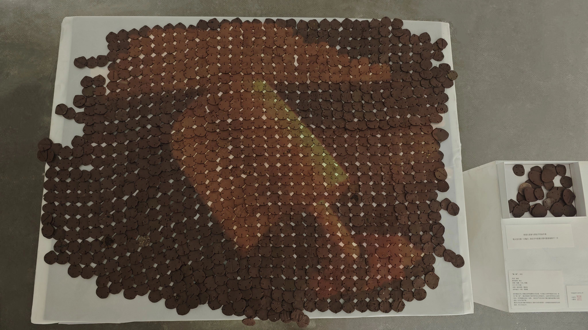
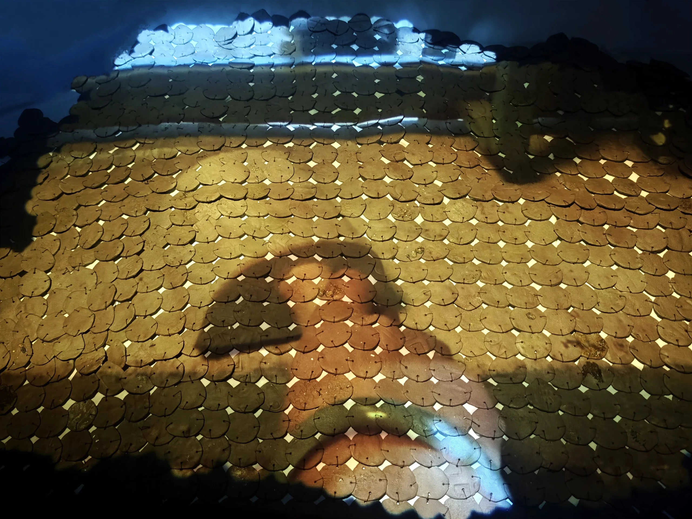
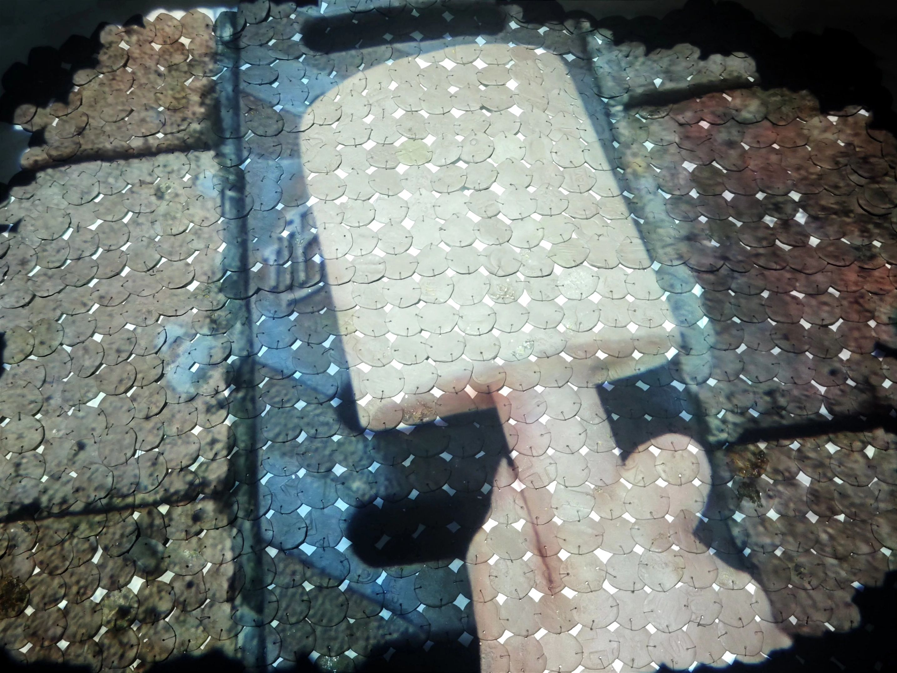
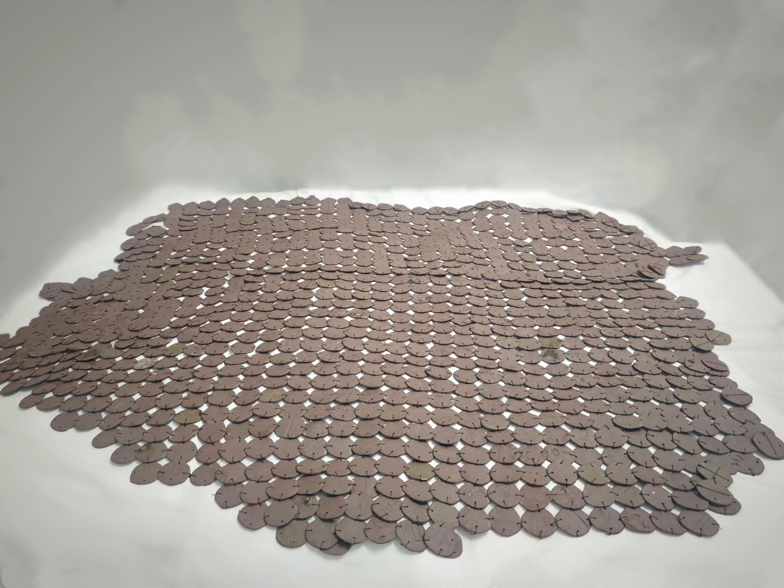
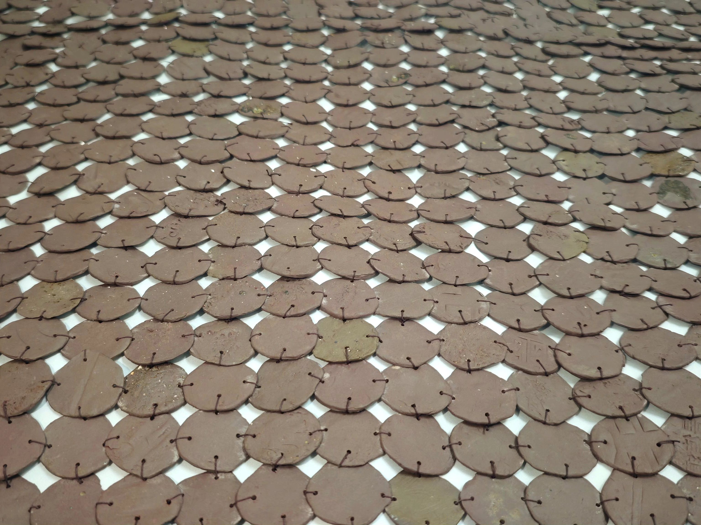
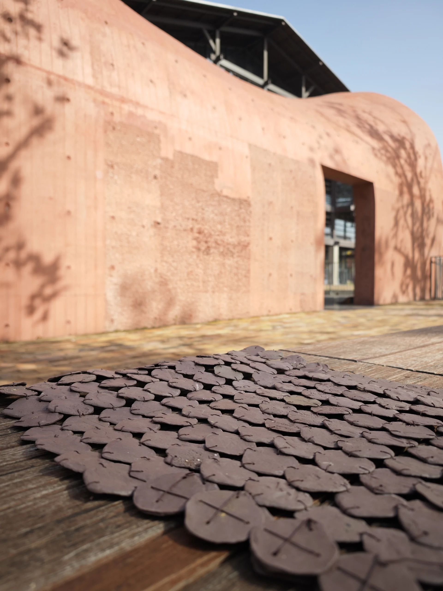
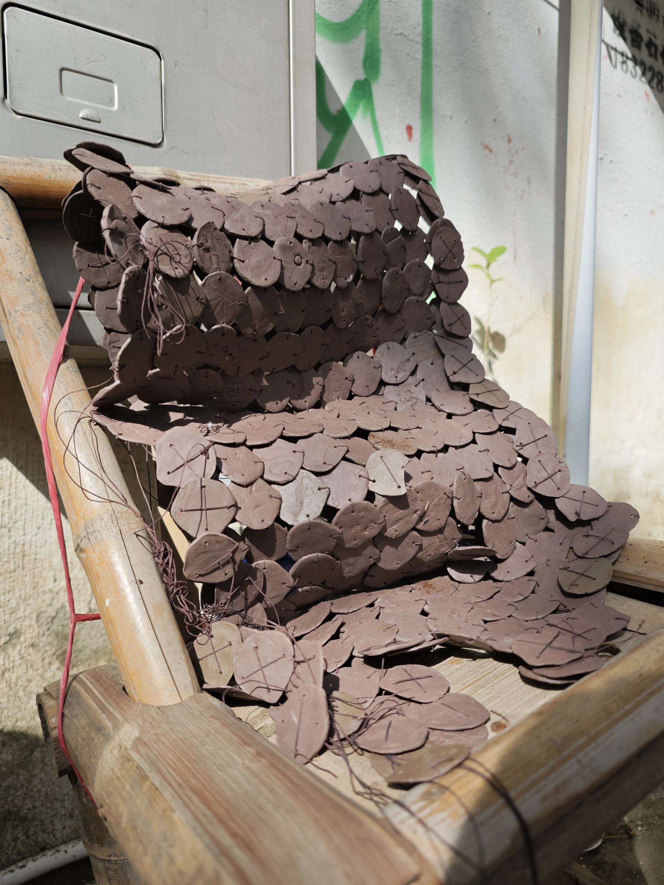

Este proyecto busca la interacción con la cultura local de Jingdezhen, conocida por su porcelana. La obra utiliza materiales tradicionales como la arcilla púrpura y cuerdas de tetera para crear una experiencia sensorial.
A través de un "golpecito", se inicia una serie de reacciones que simbolizan el impacto de pequeñas acciones en un sistema más grande, reflexionando sobre la fragilidad y la resonancia en nuestras vidas.






